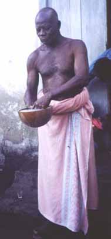

The process began on many levels with libation. Among the Eve, and other tribes from the region, libation is offered to ancestors as a convocation for auspicious events. Ancestors are the focus of deep respect.
The offering of libation involves pouring some liquor on the ground in a special pattern, followed by drinking a shot. As the glass is brought to each person present, s/he gives brief homage to the ancestors. The alignment and support of the ancestors' energies serves to guide the task at hand.
Here you see our Anyako host, Joe Ladzekpo, one month before our performance. Mr. Joe is the tsiami
Mr. Joe secured the approval of the other living village elders for us to perform in the town square, and then secured the approval and blessing of the ancestors with this libation.